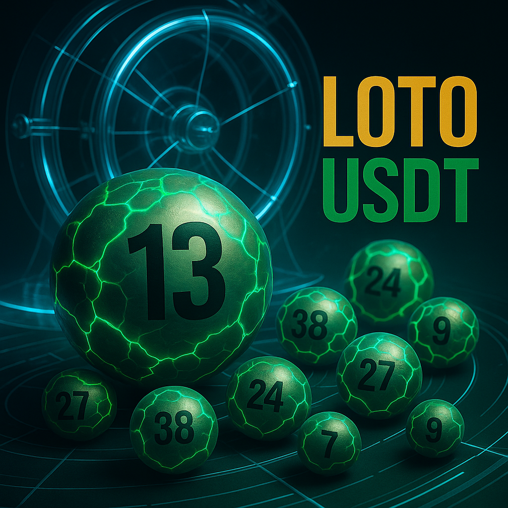

🇫🇷
🇺🇸
🇨🇳
🇩🇪
🇷🇺
🇵🇹
🇪🇸
🇮🇹
🇳🇱
🇫🇷 Français
Bienvenue dans un loto nouvelle génération : transparent, équitable et sécurisé.
🎮 Loto USDT Crypto — Comment jouer ?
• Choisis tes numéros dans une grille qui s'adapte automatiquement au nombre de joueurs.
• Ticket classique : 2 USDT = 1 participation.
• Dès le 1er ticket, la grille est figée jusqu'au tirage pour garantir l'équité.
• Participation gratuite : chaque joueur bénéficie d'un ticket gratuit sans obligation d'achat, accessible dès que le système active la grille maximale.
🎲 Tirage sécurisé & vérifiable
Le tirage utilise Drand, un système mondial d'aléa décentralisé utilisé par des acteurs majeurs comme l'Ethereum Foundation et Cloudflare.
Aucun administrateur ni joueur ne peut influencer le résultat.
🏆 Gagnants
• Ticket parfait : si tu es seul, tu remportes 100% de la cagnotte ; si plusieurs gagnants, le gain est partagé équitablement.
• Ticket bonus : tous les bons numéros sauf un + le bonus = gain également.
• Aucun gagnant ? → 99% de la cagnotte est reportée (1% pour le fonctionnement du système).
🔒 Équité garantie
• Grille figée jusqu'au tirage.
• Aléatoire infalsifiable.
• Système transparent et vérifiable.
• Ticket gratuit toujours disponible, sans achat obligatoire.
Un jeu simple, propre, sérieux.
Bonne chance 🍀
🎟️ Jouer au Loto USDT
🇺🇸 English
Welcome to a new-generation lottery: transparent, fair, and secure.
🎮 USDT Crypto Lottery — How to play?
• Choose your numbers on a grid that automatically adapts to the number of players.
• Classic ticket: 2 USDT = 1 entry.
• From the very first ticket, the grid is frozen until the draw to ensure fairness.
• Free participation: every player receives a free ticket, available when the system activates the maximum grid.
🎲 Secure & verifiable draw
The draw uses Drand, a global decentralized randomness network used by major actors such as the Ethereum Foundation and Cloudflare.
No administrator or player can influence the result.
🏆 Winners
• Perfect ticket: 100% of the pool if you are alone, shared if there are multiple winners.
• Bonus ticket: all correct numbers except one + the bonus number also wins.
• No winners → 99% of the pool is carried over (1% funds system operation).
🔒 Guaranteed fairness
• Grid frozen until draw.
• Unforgeable randomness.
• Transparent verifiable system.
• Free ticket always available, no purchase required.
A simple, clean, serious game.
Good luck 🍀
🎟️ Play USDT Lottery
🇨🇳 中文
欢迎来到新一代乐透：透明、公平、安全。
🎮 USDT 加密乐透 — 如何玩？
• 从会根据玩家数量自动调整的号码格中选择数字。
• 普通票：2 USDT = 1 次参与。
• 从第一张付费票开始，号码格即被冻结直到开奖，以保证公平性。
• 免费参与：系统启用最大号码格后，每位玩家都可领取一张免费票，无需购买。
🎲 安全且可验证的开奖
开奖使用 Drand，一个全球去中心化随机网络，由以太坊基金会和 Cloudflare 等机构采用。
无管理员或玩家可以影响结果。
🏆 中奖规则
• 完美票：若只有你中奖，你获得 100% 奖池；若多人中奖，奖金按比例平分。
• 奖励票：除一个号码外全部正确 + 奖励号也算中奖。
• 无人中奖 → 99% 奖池滚存（1% 用于系统维护）。
🔒 公平保证
• 开奖前号码格保持冻结。
• 随机结果不可伪造。
• 系统透明可验证。
• 免费票随时可领，无需购买。
简单、可靠、严谨的游戏。
祝你好运 🍀
🎟️ 进入 USDT 乐透
🇩🇪 Deutsch
Willkommen bei einer neuen Generation von Lotto: transparent, fair und sicher.
🎮 USDT Krypto-Lotto — Wie spielt man?
• Wähle deine Zahlen auf einem Raster, das sich automatisch an die Spieleranzahl anpasst.
• Klassisches Ticket: 2 USDT = 1 Teilnahme.
• Ab dem ersten Ticket wird das Raster bis zur Ziehung eingefroren, um Fairness zu garantieren.
• Kostenlose Teilnahme: Jeder Spieler erhält ein kostenloses Ticket, verfügbar sobald das System das maximale Raster aktiviert.
🎲 Sichere & überprüfbare Ziehung
Die Ziehung verwendet Drand, ein globales, dezentralisiertes Zufallsnetzwerk, das von Organisationen wie der Ethereum Foundation und Cloudflare genutzt wird.
Kein Administrator oder Spieler kann das Ergebnis beeinflussen.
🏆 Gewinner
• Perfektes Ticket: Wenn du allein gewinnst, erhältst du 100% des Jackpots; bei mehreren Gewinnern wird der Gewinn gerecht geteilt.
• Bonusticket: Alle richtigen Zahlen bis auf eine + Bonuszahl = ebenfalls Gewinn.
• Keine Gewinner → 99% des Jackpots werden übertragen (1% Systembetrieb).
🔒 Fairness garantiert
• Raster bis zur Ziehung eingefroren.
• Fälschungssichere Zufälligkeit.
• Transparenter, überprüfbarer Prozess.
• Kostenloses Ticket jederzeit verfügbar, kein Kauf nötig.
Ein einfaches, ernstes, sauberes Spiel.
Viel Glück 🍀
🎟️ USDT Lotto spielen
🇷🇺 Русский
Добро пожаловать в лотерею нового поколения: прозрачную, честную и безопасную.
🎮 USDT Крипто-лотерея — Как играть?
• Выберите числа в сетке, которая автоматически адаптируется к количеству игроков.
• Обычный билет: 2 USDT = 1 участие.
• С первой купленной ставки сетка замораживается до розыгрыша для обеспечения честности.
• Бесплатное участие: каждый игрок получает один бесплатный билет после активации максимальной сетки.
🎲 Безопасный и проверяемый розыгрыш
Используется Drand — глобальная децентрализованная сеть случайности, применяемая Ethereum Foundation и Cloudflare.
Никто — ни администратор, ни игрок — не может повлиять на результат.
🏆 Победители
• Идеальный билет: 100% банка, если вы единственный победитель; при нескольких победителях приз делится поровну.
• Бонус-билет: все правильные числа, кроме одного + бонус — тоже выигрыш.
• Нет победителей → 99% банка переносится (1% — обслуживание системы).
🔒 Гарантия честности
• Сетка заморожена до розыгрыша.
• Невозможность подделки случайности.
• Прозрачная, проверяемая система.
• Бесплатный билет всегда доступен, покупка не требуется.
Простая, честная, серьёзная игра.
Удачи 🍀
🎟️ Играть в USDT Лотерею
🇵🇹 Português
Bem-vindo a uma loteria de nova geração: transparente, justa e segura.
🎮 Loteria Cripto USDT — Como jogar?
• Escolha seus números em uma grade que se adapta automaticamente ao número de jogadores.
• Bilhete clássico: 2 USDT = 1 participação.
• A grade congela a partir do primeiro bilhete, garantindo justiça.
• Participação gratuita: cada jogador recebe um bilhete grátis quando o sistema ativa a grade máxima.
🎲 Sorteio seguro e verificável
O sorteio utiliza Drand, uma rede global de aleatoriedade descentralizada usada por organizações como Ethereum Foundation e Cloudflare.
Nenhum administrador ou jogador pode influenciar o resultado.
🏆 Vencedores
• Bilhete perfeito: 100% do prêmio se você for o único vencedor; se houver vários, o valor é dividido.
• Bilhete bônus: todos os números corretos menos um + bônus também ganham.
• Sem vencedores → 99% acumulado (1% manutenção do sistema).
🔒 Equidade garantida
• Grade congelada até o sorteio.
• Aleatoriedade impossível de falsificar.
• Sistema transparente e verificável.
• Bilhete grátis sempre disponível, sem compra obrigatória.
Um jogo simples, limpo e sério.
Boa sorte 🍀
🎟️ Jogar Loteria USDT
🇪🇸 Español
Bienvenido a una lotería de nueva generación: transparente, justa y segura.
🎮 Lotería Cripto USDT — ¿Cómo jugar?
• Elige tus números en una cuadrícula que se adapta automáticamente al número de jugadores.
• Boleto clásico: 2 USDT = 1 participación.
• Desde el primer boleto, la cuadrícula queda congelada hasta el sorteo para garantizar la equidad.
• Participación gratuita: cada jugador recibe un boleto gratis cuando el sistema activa la cuadrícula máxima.
🎲 Sorteo seguro y verificable
El sorteo usa Drand, una red global de aleatoriedad descentralizada utilizada por la Ethereum Foundation y Cloudflare.
Ningún administrador ni jugador puede influir en el resultado.
🏆 Ganadores
• Boleto perfecto: 100% del pozo si eres el único ganador; si hay varios, se reparte equitativamente.
• Boleto bonus: todos los números correctos excepto uno + bonus también ganan.
• Sin ganadores → 99% del pozo se acumula (1% mantenimiento del sistema).
🔒 Equidad garantizada
• Cuadrícula congelada hasta el sorteo.
• Aleatoriedad imposible de manipular.
• Sistema transparente y verificable.
• Boleto gratis siempre disponible, sin obligación de compra.
Un juego simple, serio y limpio.
Suerte 🍀
🎟️ Jugar Lotería USDT
🇮🇹 Italiano
Benvenuto in una lotteria di nuova generazione: trasparente, equa e sicura.
🎮 Lotto Cripto USDT — Come si gioca?
• Scegli i tuoi numeri in una griglia che si adatta automaticamente al numero di giocatori.
• Biglietto classico: 2 USDT = 1 partecipazione.
• Dal primo biglietto, la griglia rimane congelata fino all'estrazione per garantire equità.
• Partecipazione gratuita: ogni giocatore riceve un biglietto gratuito quando il sistema attiva la griglia massima.
🎲 Estrazione sicura e verificabile
L’estrazione utilizza Drand, una rete globale di casualità decentralizzata usata da Ethereum Foundation e Cloudflare.
Nessun amministratore o giocatore può influenzare il risultato.
🏆 Vincitori
• Biglietto perfetto: 100% del montepremi se sei l’unico vincitore; se ci sono più vincitori, il premio viene diviso.
• Biglietto bonus: tutti i numeri corretti tranne uno + bonus vincono ugualmente.
• Nessun vincitore → 99% si accumula (1% manutenzione del sistema).
🔒 Equità garantita
• Griglia congelata fino all’estrazione.
• Casualità non falsificabile.
• Sistema trasparente e verificabile.
• Biglietto gratuito sempre disponibile, senza acquisto obbligatorio.
Un gioco semplice, serio e pulito.
Buona fortuna 🍀
🎟️ Giocare alla Lotteria USDT
🇳🇱 Nederlands
Welkom bij een nieuwe generatie lotto: transparant, eerlijk en veilig.
🎮 USDT Crypto Lotto — Hoe speel je?
• Kies je nummers op een raster dat zich automatisch aanpast aan het aantal spelers.
• Klassiek ticket: 2 USDT = 1 deelname.
• Vanaf het eerste ticket wordt het raster bevroren tot de trekking, voor gegarandeerde eerlijkheid.
• Gratis deelname: elke speler ontvangt een gratis ticket zodra het systeem het maximale raster activeert.
🎲 Veilige & verifieerbare trekking
De trekking gebruikt Drand, een wereldwijd gedecentraliseerd willekeurigheidsnetwerk dat door o.a. Ethereum Foundation en Cloudflare wordt gebruikt.
Geen beheerder of speler kan het resultaat beïnvloeden.
🏆 Winnaars
• Perfect ticket: 100% van de pot als je de enige winnaar bent; gedeeld bij meerdere winnaars.
• Bonusticket: alle juiste nummers behalve één + bonus winnen ook.
• Geen winnaars → 99% rollover (1% systeemkosten).
🔒 Eerlijkheid gegarandeerd
• Raster bevroren tot de trekking.
• Niet-te-vervalsen willekeur.
• Transparant en verifieerbaar systeem.
• Gratis ticket altijd beschikbaar, geen aankoop verplicht.
Een eenvoudig, serieus en schoon spel.
Veel succes 🍀
🎟️ USDT Lotto spelen